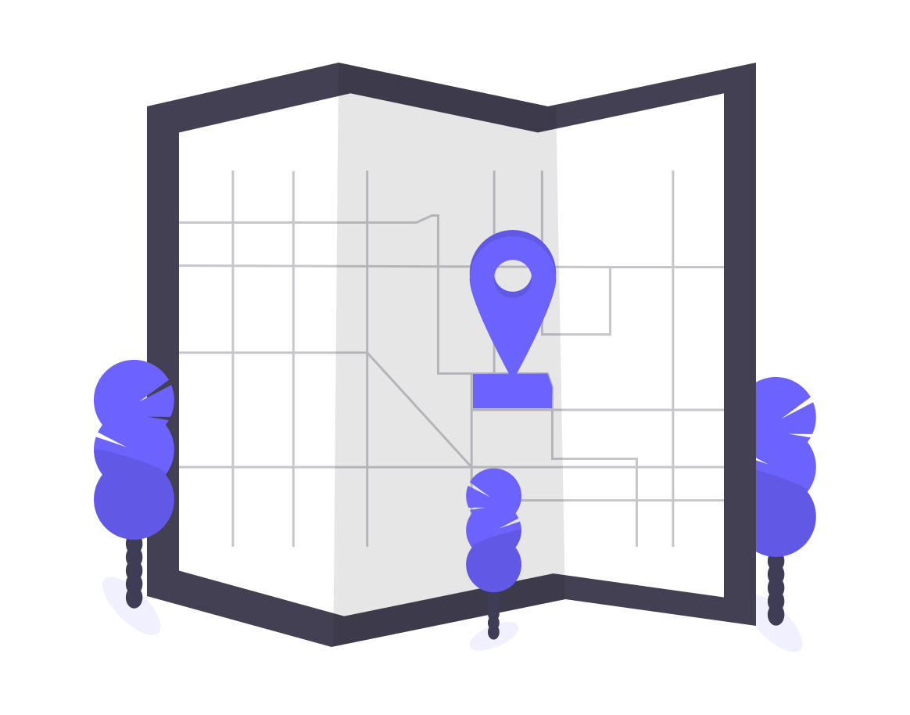

USŁUGI

Tworzymy mapę sieci sanitarnych.
Projektujemy instalacje grzewcze, wodne, kanalizacyjne, gazowe, wentylacyjne.
Wykonujemy wykopy pod instalacje.
Wykonujemy przyłącza pod domy wielorodzinne, domy jednorodzinne, domki letniskowe, obiekty gospodarcze.
Wykonujemy usługi kompleksowo i w sposób dostosowany do indywidualnych potrzeb klienta!
Przygotowujemy ofertę dopasowaną do potrzeb klienta i jego możliwości finansowych. Zapewniamy najwyższy poziom usług.